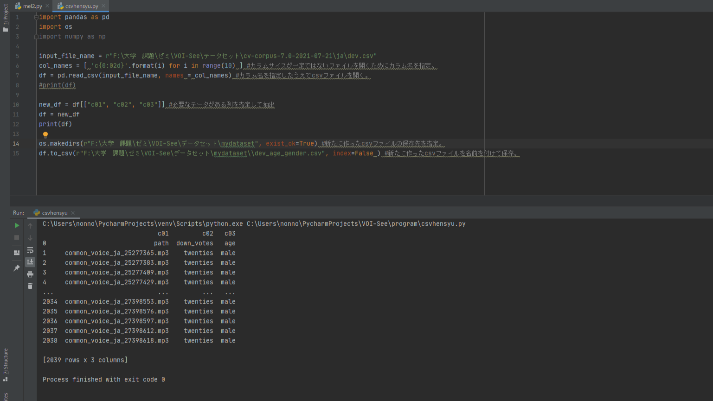
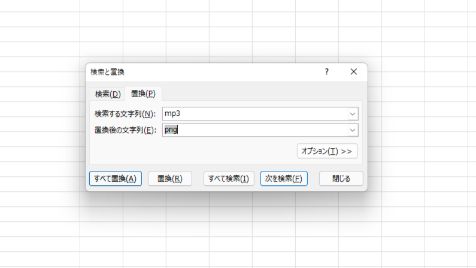
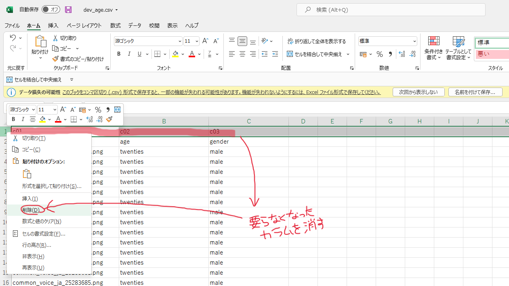
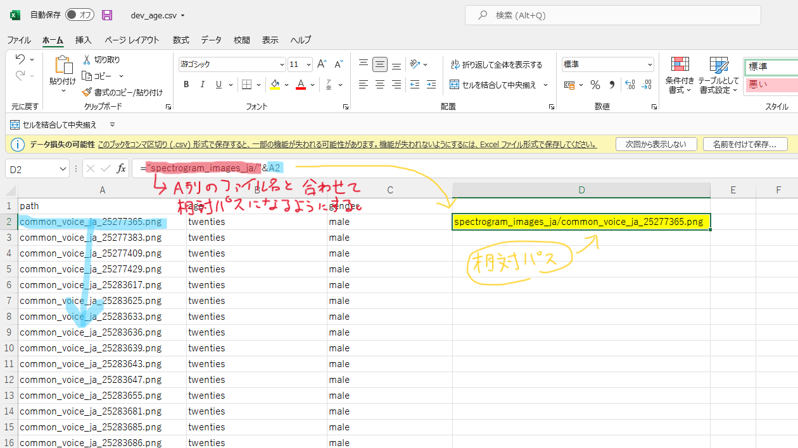
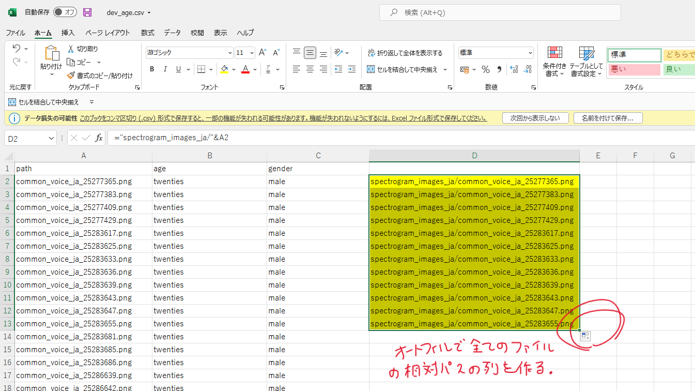
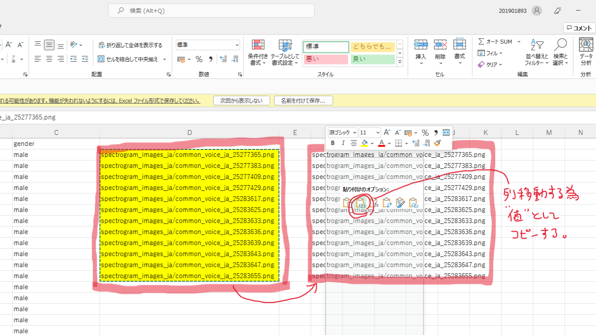
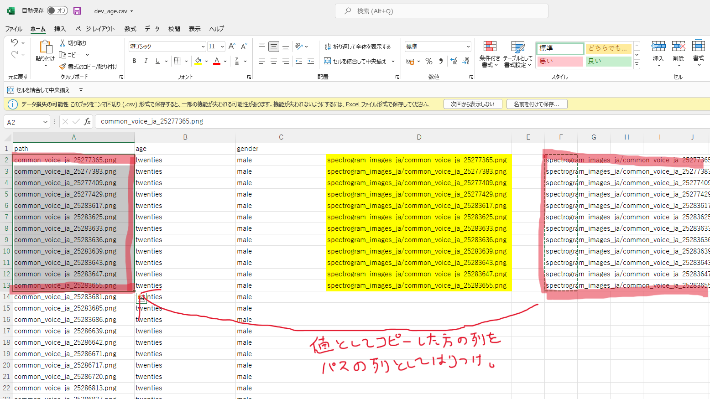

【年齢推定】学習データの準備(2022/01/16)
今回は、既存のデータセットとcsvファイルを年齢推定に必要な形に加工して、Neural Network Consoleで学習可能な形に準備します。
●既存のデータセット
・Mozilla CommonVoice
日本語を指定してデータセットをダウンロード。
ダウンロードしたTARファイルを展開すると、mp3の音声ファイルが集まったフォルダとcsvファイルやtsvファイルが入っている。
●音声ファイルから画像ファイルへの変換
以前作成した、こちらのページで改良したコードでCommon Voiceの音声ファイルをメル周波数スペクトログラム変換し、pngファイルとして新たに保存します。
●csvファイルの加工
①下記画像のコードで、必要な要素を取り出した新たなcsvファイルを作成、出力したものをエクセルで開く。

②エクセルで適切な形に整える。
●ファイル名の拡張子をmp3からpngに置換。
エクセルのツールバーから「ホーム」→「検索と選択」→「置換」を開く。
検索する文字列に「mp3」、置換後の文字列に「png」を指定して、「すべて置換」を選ぶ。

●不要なカラムを削除する
csvファイルを読み込む際に仮で生成したカラムを、1行目をまとめて削除して消す。

●データセットのファイル名を相対パスの形にする。
エクセルの関数を利用して、ファイル名を相対パスの形にする。




●参考にしたサイト
・http://blog.mwsoft.jp/article/113600124.html
・https://note.nkmk.me/python-pandas-index-row-column/
・https://tech-and-investment.com/pandas7-csv-write/
・https://proclass.jp/blog/?p=6044
今回の投稿はここまで。ありがとうございました。